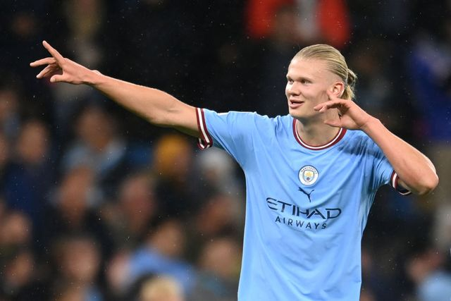
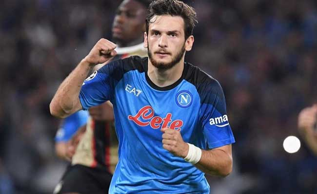
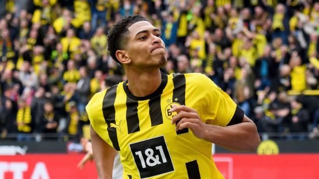
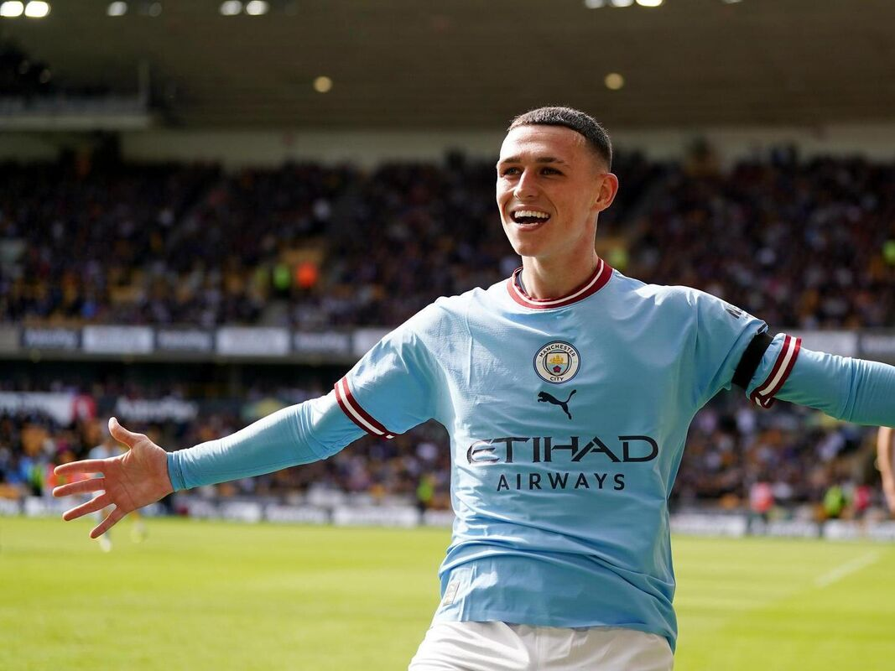

1.

Kylian Mbappé
Mbappé nasce calcisticamente come esterno offensivo, ma è anche in grado di ricoprire il ruolo di prima punta.Molto abile nel dribbling,finalizzatore prolifico, è dotato di grande velocità e intelligenza tattica, che gli consentono di lasciarsi alle spalle il proprio marcatore diretto e, di conseguenza, essere incisivo in profondità.
Per il suo stile di gioco, è stato paragonato al connazionale Thierry Henry.
Esplosivo.
2.
Erling Haaland
È un attaccante dotato di buona tecnica, velocità e forza fisica. Dispone di un ottimo fiuto del goal, è di piede mancino, e i suoi 194 cm gli consentono di essere un buon colpitore di testa. La potenza dei suoi tiri li rende insidiosi e in più è bravo anche a inserirsi negli spazi lasciati dalle difese avversarie. Sa distinguersi anche come rifinitore per via della sua buona visione di gioco.Si ispira a Zlatan Ibrahimović.
Alieno.

3.
Khvicha Kvaratskhelia
Ala sinistra dal fisico longilineo, può giocare su tutto il fronte offensivo. Pur essendo bravo con entrambi i piedi, predilige l'uso del destro, soprattutto per accentrarsi partendo dalla fascia opposta. Elegante nella corsa, dispone di una grande accelerazione palla al piede, oltre a essere abile nel dribbling, nella finalizzazione e nei calci piazzati. Dà il meglio di sé quando si trova in campo aperto, ed è anche in grado di creare occasioni da gol per i compagni, grazie alla buona visione di gioco.
Per le sue caratteristiche, è considerato uno dei migliori talenti mai espressi dal calcio georgiano.
Inarrestabile.

4.
Jude Bellingham
Giocatore dinamico e abile nel dribbling nello stretto, è una mezzala che abbina buona fisicità ad ottime doti di palleggio.
Fondamentale.

5.
Phil Foden
Trequartista mancino, dotato di una eccellente tecnica individuale, grazie alla sua duttilità tattica può agire anche da ala o da falso nueve.
Indicato come uno dei migliori prospetti del calcio mondiale, ha dichiarato di ispirarsi all'ex compagno di squadra David Silva.
Sublime.
